Our first bike through the workshop. Here’s what we found under the panels, what we’ve tackled and what’s left before it goes back on the road.
Recommissioning Underway
Stage 01 · At RMC
First Look
The yellow TL1000R was our first purchase for RMC. It looked like a straightforward recommission at first. Once we started looking properly, there was more to do than we expected.
It arrived complete and running, but that doesn’t tell you what’s hiding underneath. We started taking the panels off and working through it.
Stage 02 · Strip-Down
Panels Off
With the bodywork off, we could get at the frame, engine, suspension, brakes and wiring. There was plenty of dirt in places you’d never normally see.
Better to find the problems now than discover them when the bike is supposedly ready to sell.
Next
Next up: work through what we’ve uncovered and start cleaning everything before it goes back together.
Stage 03 · Going Deeper
The Jobs Nobody Sees
Once the panels were off, we found dirt everywhere. We’ve spent a fair bit of time cleaning the frame, engine and smaller parts, using the parts washer, ultrasonic cleaner and plenty of elbow grease. Some of these photos were taken after cleaning, not before.
Stage 04 · Workshop Update
A Few More Jobs Than Expected
The engine cleaned up nicely, but the throttle bodies were badly corroded on the outside. Off they came for a proper clean and a check of the linkages and seals. We also took the opportunity to go through the radiators.
The wheels came off too, along with the discs and sprockets. It’s turned into a bigger strip-down than we originally planned.
Stage 05 · Initial Findings
Behind the Sprocket Cover
Behind the front sprocket cover was a thick layer of old chain grease and muck. At first we wondered whether the gear-selector seal was leaking. The only way to tell was to clean it all off and have another look.
Stage 06 · Cleaning & Inspection
Much Better After a Clean
Once the grime was gone, the area looked much better. What initially looked like an oil leak may simply have been years of chain grease. We’ll still check it once the bike’s running again.
BEFORE · Old grease and road dirtAFTER · Cleaned for inspection
Engine And Front End
We cleaned around the engine and checked the hoses, connections and fixings while everything was easy to reach.
ENGINE · Cleaning in progressFRONT END · Stripped for inspection
Still To Come
Finish the mechanical jobs, put it back together, then check everything before the MOT.
Stage 07 · Fuel & Induction
Sorting the Throttle Bodies
The throttle bodies were one of the worst-looking parts of the bike. The linkages and springs were covered in corrosion, so we stripped and cleaned what we could, then checked that everything moved freely. They’ve since gone back on the engine.
THROTTLE BODY · Mikuni sensor and housingBEFORE · Corrosion on the throttle linkage
CONNECTORS · Inspection and cleaning required
Fuel Pump Out
We removed the fuel pump to sort the seal between the pump and tank. There was corrosion on the assembly and old sealant around the opening, so it needed cleaning up before going back together.
FUEL PUMP · Removed for inspectionTANK · Pump aperture and sealing face
SEAL · Old gasket removed
Fuel Pump Inspection
The pump assembly looked tired once it was out. We checked it, cleaned the mounting area and refitted it with a replacement seal.
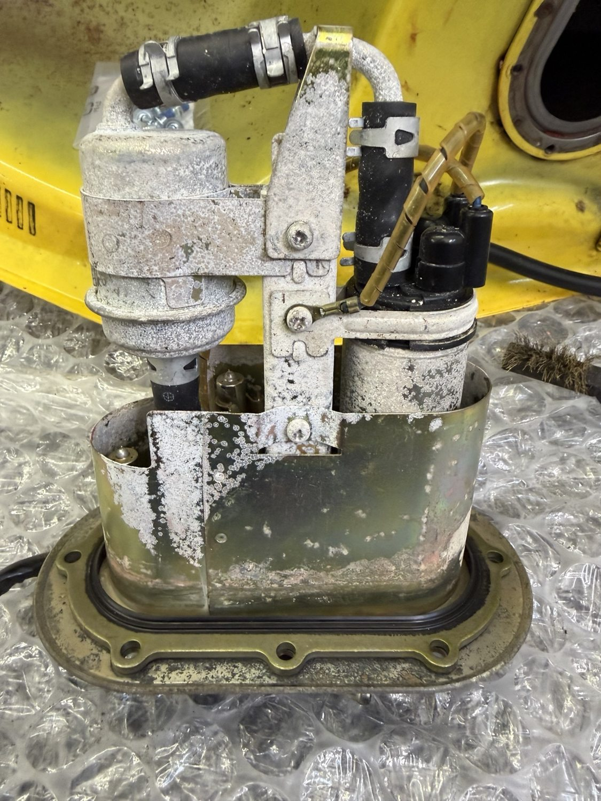
FUEL PUMP · Assembly and corrosion inspected
Old Plugs Out
The old plugs came out as part of the service. One was noticeably rustier on the outside than the other. Both have been replaced.
PLUGS · Removed components inspected
Next
With the fuel system sorted, the next job was getting the throttle bodies, hoses and tank back in place.
Stage 09 · Cleaning & Preparation
Cleaning, Painting and the Small Jobs
The brake discs and calipers have been cleaned, some brackets painted and a mountain of little bits put through the parts washer and ultrasonic cleaner. It takes time, but it all adds up.
We’ve also been replacing worn parts as we go. The brakes will get their final checks once everything is assembled.
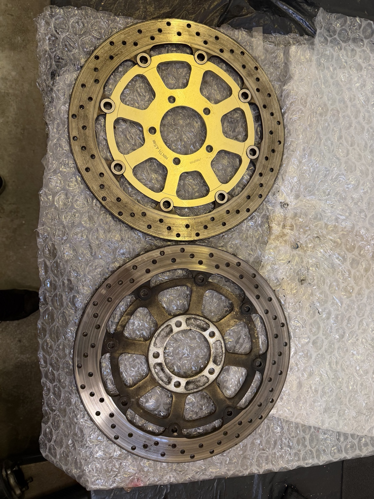
BRAKES · Discs cleaned and inspected
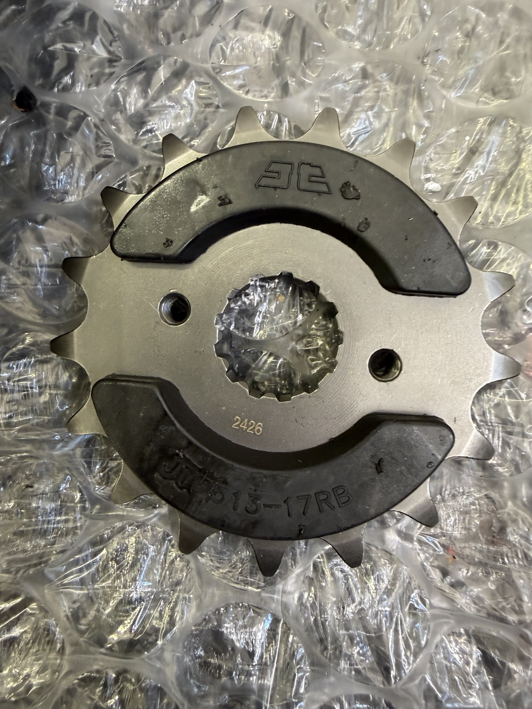
FINAL DRIVE · Replacement sprocket ready
Tank and Fuel System
The fuel pump and its connections have been dealt with, and the tank has had a good clean and polish. The yellow paint has come up really well.
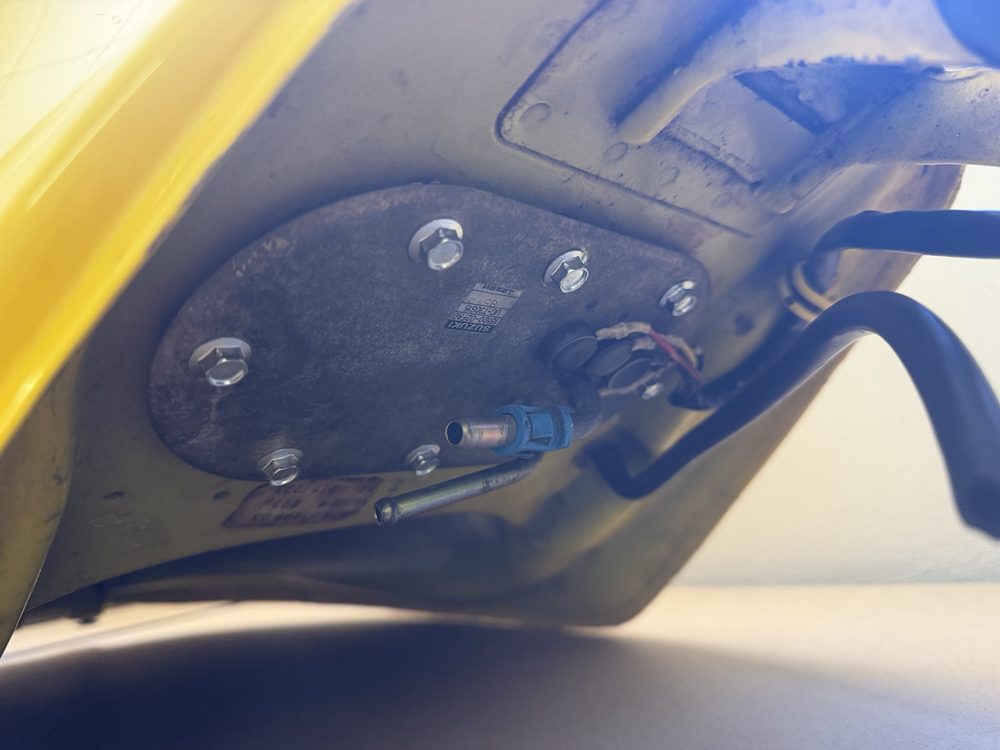
FUEL SYSTEM · Tank underside
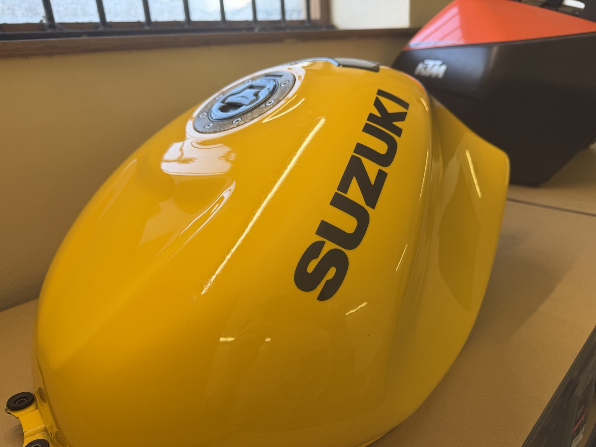
BODYWORK · Tank after polishing
Next
Time to start getting the bike back together.
Stage 10 · Reassembly Progress
The Rebuild Begins
After weeks of taking things off and cleaning them, we’re finally putting parts back on. The throttle bodies are refitted, the radiators are back in place and the tank is on. There’s still plenty to do at both ends of the bike.
It’s starting to look like a motorcycle again, even with the wheels and much of the bodywork still off. We’ve been checking hoses and connections as we go rather than rushing to put the panels back on.
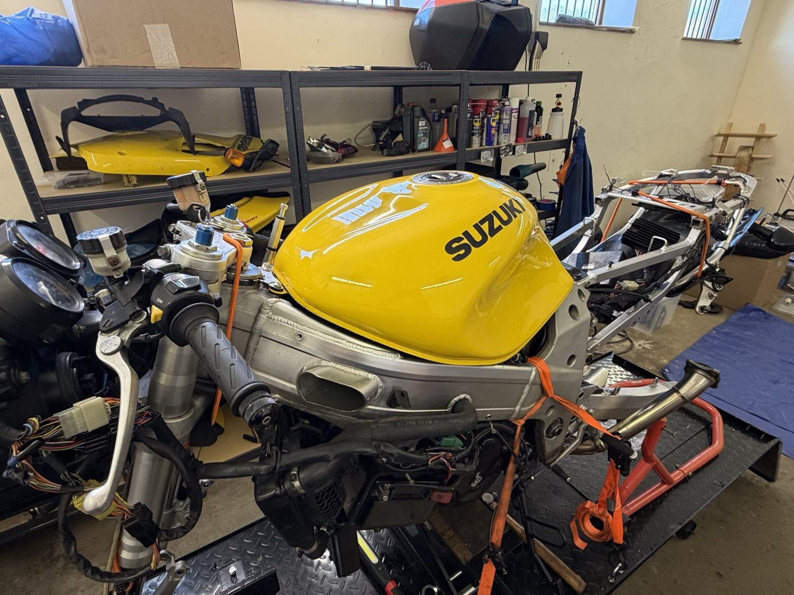
REASSEMBLY · Tank back on, bodywork still off
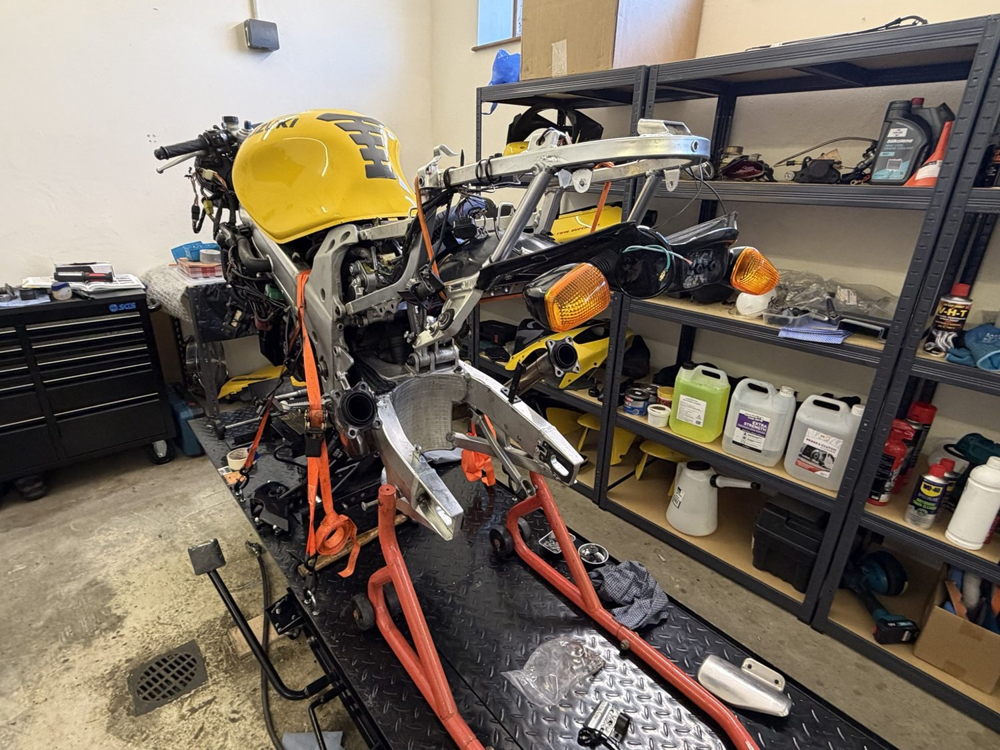
REAR END · Subframe still exposed
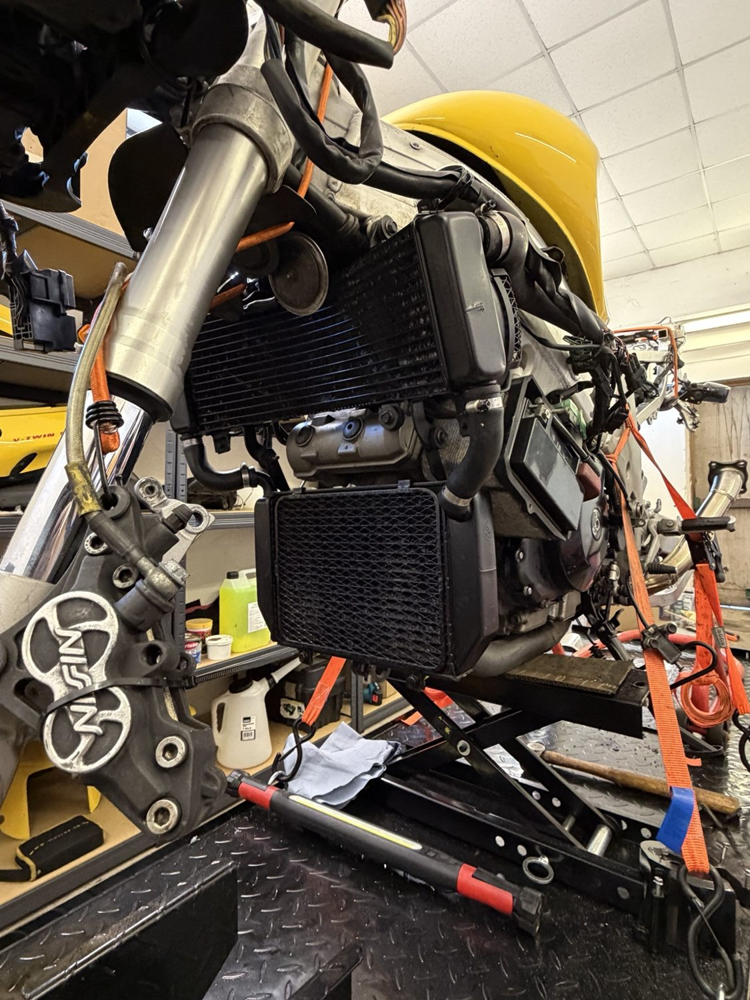
COOLING · Radiators refitted
Sorting the Little Jobs
A few brackets and fixings needed cleaning up or replacing. Not exciting work, but worth doing while everything’s apart.
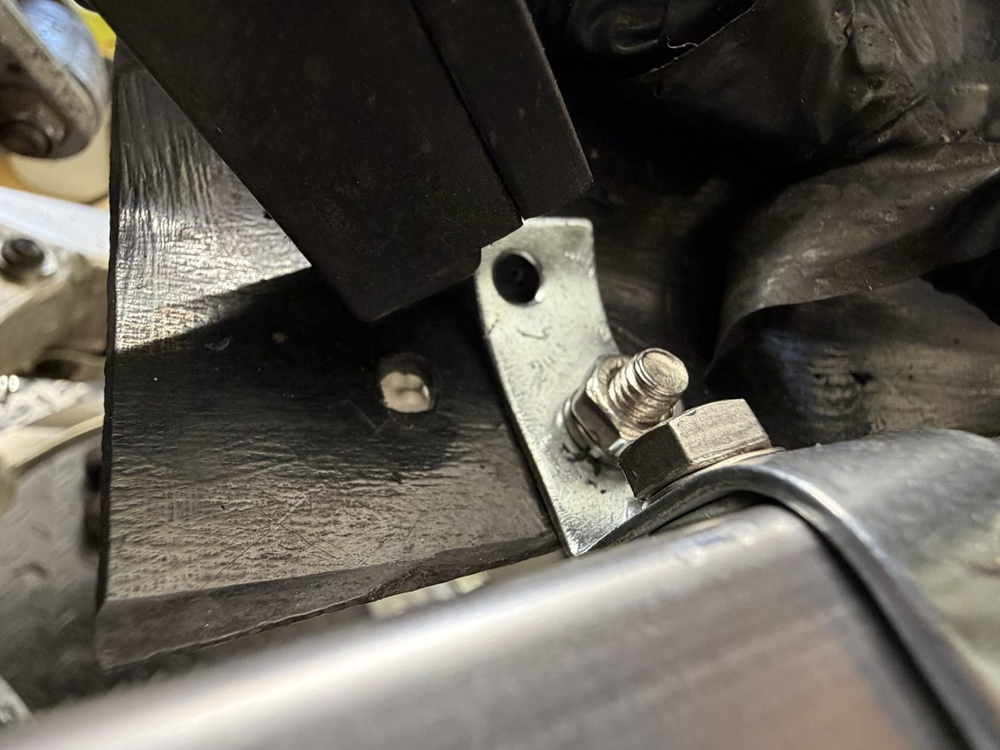
DETAILS · Cleaned bracket and fixing
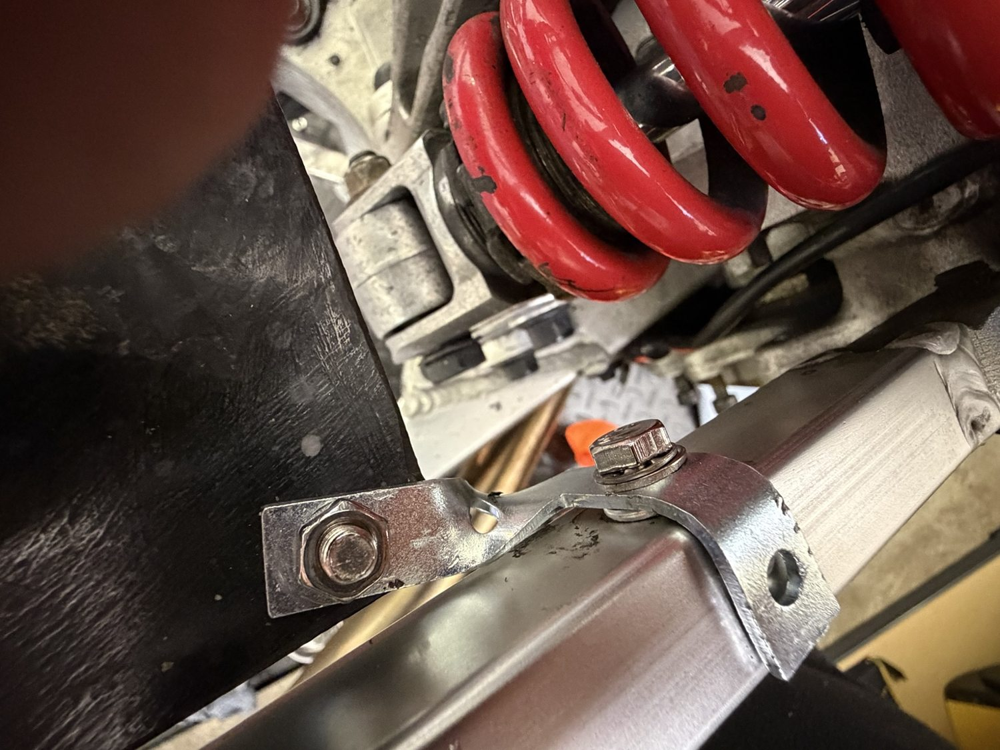
DETAILS · Rear mounting bracket
Throttle Bodies Cleaned
Before they went back under the tank, the throttle bodies and linkages had a thorough clean. They’re now refitted, with the final adjustments still to do.
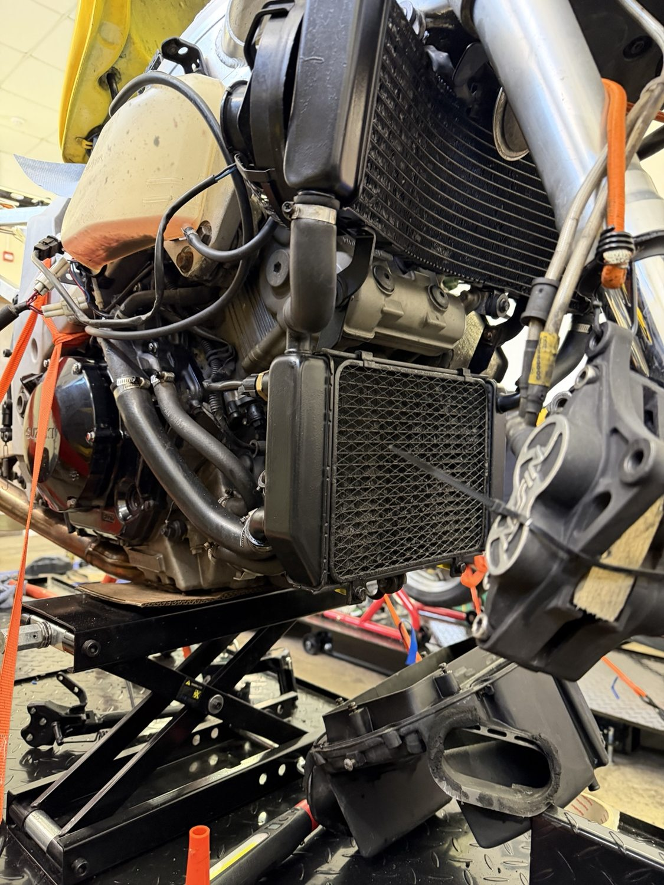
AFTER · Throttle bodies cleaned before refitting
Still To Come
Finish the brakes and remaining assembly, check the fluids and throttle-body settings, then road test it and get it through an MOT.
To Follow
Next: Finish It and Ride It
We’ll keep adding updates as the TL comes together. The next big milestones are the first proper checks, a road test and the MOT. Then we can show you the finished bike.